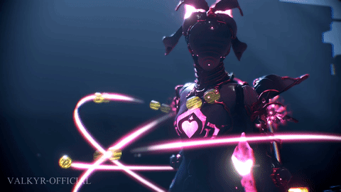

INTRODUCCION
Warframe es un videojuego de disparos en tercera persona gratuito de modalidad jugador contra entorno individual o cooperativo, aunque posee una modalidad
jugador contra jugador en el modo de juego conocido como Cónclave.
La trama de la historia se desarrolla en un futuro post-apocalíptico luego del colapso de la civilización Orokin, donde tendremos que construir a lo largo de
nuestra aventura varias cosas y subir de reputación con varios grupos para ganar recompensas, el jugador desempeña el papel de un niño perteneciente a los
Tenno, un grupo de niños que fueron mutados y adquirieron habilidades especiales al ser expuestos a la energía presente en el Vacío, un espacio sub-dimensional
usado por los Orokin para transportarse, que controla unas armaduras llamados Warframes. Los objetivos del jugador incluyen el descubrir los eventos que
resultaron en el colapso de los Orokin y el origen de los Tenno, coleccionar armamento, herramientas, mascotas y mods.
